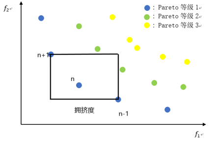
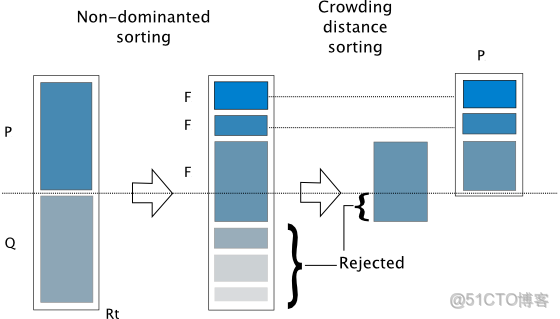
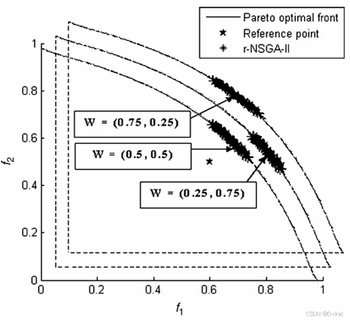
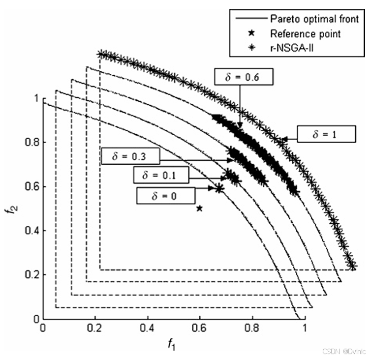

多目标优化
1. 最优化问题
其中 𝐱 表示该问题的一个解或决策向量， 它由 𝐷 个决策变量 𝑥𝑖 组成，其中每个决策变量可能被限制为实数、整数或二进制数等。 Ω 表示该问题的搜索空间， 它由下界 𝑙1, 𝑙2, … 𝑙𝐷 和上界 𝑢1, 𝑢2, … 𝑢𝐷 构成，即任意决策变量始终满足 𝑙𝑖 ≤ 𝑥𝑖 ≤ 𝑢𝑖 。 𝑓1(𝐱), 𝑓2(𝐱), … , 𝑓𝑀(𝐱) 表示该解的 𝑀 个目标函数值， 𝑔1(𝐱), 𝑔2(𝐱), … , 𝑔𝐾(𝐱) 表示该解的 𝐾 个约束违反值。
2. 关键术语
2.1 Pareto支配
对于决策向量，如果：
那么称Pareto支配
注：考虑约束违反值。不违反约束的决策向量总是支配违反约束的，约束违反值小的决策向量总是支配约束违反值大的。
2.2 Pareto最优
若在多目标优化问题中，某一解的任一目标想要改进时，必然导致至少另一目标变差，则此解为“Pareto最优”。如果某一解的任一目标改进没导致其他目标改变，那就说明还没到边界，不是“Pareto最优”
如果一个决策变量不存在其他决策变量能够支配它，那么就称该决策变量为非支配解，即为Pareto最优
2.3 Pareto前沿
帕累托前沿是多目标优化问题中的核心概念，也称为帕累托最优边界。其本质是描述在多目标条件下无法进一步优化某一目标而不损害其他目标的解集。
所有Pareto最优决策向量构成的集合为Pareto前沿
3. 多目标优化方法
3.1 NSGAII
NSGAII是带有精英保留策略的快速非支配多目标优化算法，是一种基于Pareto最优解的多目标优化算法。
3.1.1 筛选策略
3.1.1.1 非支配排序
种群大小为，计算每个决策向量的被支配个数和该决策向量支配的决策向量集合。
根据被支配个数将决策向量划分等级
3.1.1.1.1 约束处理策略
违反约束的决策向量也要计算目标值，标记为不可行解。
将违反约束解的目标值修改为最大目标值加上违反约束值之和：
目的：
可行解保持原目标值
不可行解增加惩罚，使其在多目标排序中劣于可行解
不可行解之间的支配关系由约束违反值之和决定
3.1.1.2 拥挤距离
从二目标优化问题来看，就像是该个体在同一Pareto等级空间所能生成的最大的矩形（该矩形不能触碰同一Pareto等级其他的点）的边长之和，边界解为无穷大。拥挤度示意图如图所示：

越稀疏越优先保留。
3.1.1.3 总结
子代与父代混合后进行非支配排序，非支配排序保留的最后一代中根据拥挤度距离进行筛选。

3.1.2 子代生成
子代生成策略与普通的遗传算法相同，主要有竞标赛选择和实数编码的交叉操作。Todo
3.2 R-NSGAII（Preference-based）
NSGAII的目标是覆盖整个Pareto面，但其实一些极端解并不在我们关心的范围内，因此加入偏好将种群进化向Pareto面的局部区域引导。
3.2.1 R支配
设参考点为$$g

定义距离的范围：
如果：
那么则称那么称“R-支配”
其中$$\delta
$$是R-支配阈值，阈值越小，R-支配分层越细
当$$\delta=1
$$时，不存在R-支配，即普通的NSGAII

与普通NSGII相比，R-NSGAII相当于是在Pareto前沿面上又细化了一块喜好区域，可以筛选掉极端解。
3.3 NSGAIII与RPD-NSGA-II
NSGAIII引入参考方向，RPD-NSGA-II引入参考点。在pareto支配的基础上增加方向支配或位置支配，优势是在高维问题中减少了非支配解个数。